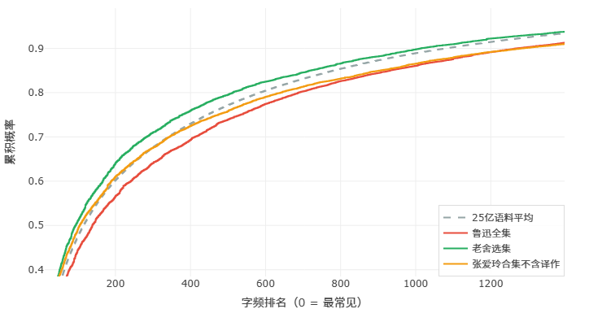
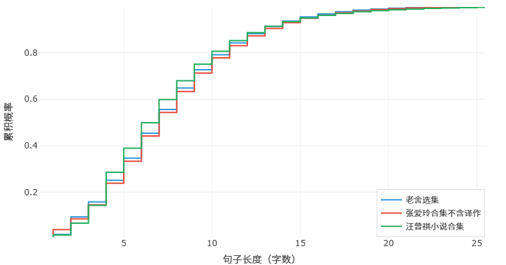
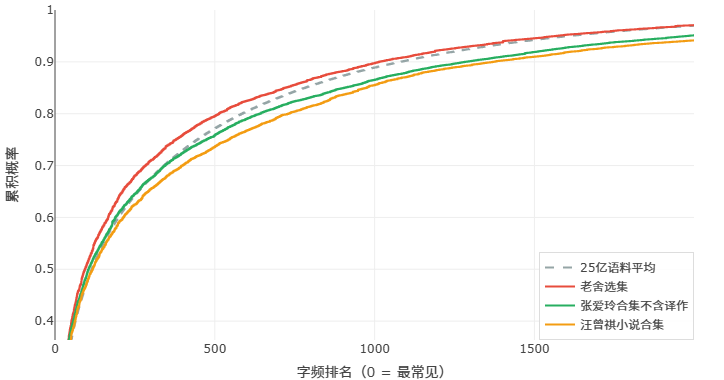

文无第一？盛名之下的数据！
有一个观点，说出来可能会得罪人，但我还是想说：把句子写短这件事，其实相当考验一个人的语感和智力。
有些人听到这里就不高兴了。他说，写短句有什么难的？谁还不会写短句啊？你看，我，现在，就可以，很短。
没错，把句子强行掰碎，谁都会。但那种短句读起来是什么感觉？是一瘸一拐，是上气不接下气，是人为制造的、笨拙的顿挫。真正的短句，不是靠句号硬切出来的——它是自然的、流动的、三五字自成一句，读起来轻快、干净，像呼吸一样。苏轼夸文章"如行云流水"，行云流水哪有长句当道、臃肿不堪的道理？能把句子写得又短又自然的人，对语言的掌控力一定是一流的。
空口无凭，我们拿数据说话。下面是我们用写作风格分析器对几位作家的文本做的一组对比。看图之前先说明一下：第一张图是句子长度分布——柱子越靠左，说明短句越多；第二张图是词频分析（中文这里用的是字频）——它反映的是用词的丰富程度，越靠左，文章里的常用字词越多，则越不够丰富。
第一组：鲁迅 · 老舍 · 张爱玲
这三位，大概是中国现代文学史上绕不过去的三座大山。把他们的合集找来，放进分析器里跑了一遍。结果如下：


先说句子长度。鲁迅先生句子最短，干脆利落。但要知道他其实是一个非常激进的先锋作家、改革派作家，他是不介意把所谓的欧化语法引入中文的，为此他在那个年代没少被蛐蛐。但好笑的是，即便这样，他写的句子也比别人短，也比别人更有中国的味道。这就是他强大古文功底的体现。老舍先生的句子相对最长，他写北京，写市井，写人情世故，句子绵长而有烟火气，读起来像在胡同里遛弯儿。张爱玲先生居中，不长不短，她那种冷眼旁观的语调，既不需要鲁迅式的短促击打，也不需要老舍那样的铺排展开。
再看用词丰富度。鲁迅先生又是第一——用词最为丰富，词汇量覆盖范围广，极少重复使用高频词。这说明什么？说明他的短句不是"词汇贫乏所以只能说那么少"，而是"词汇多到可以精准地挑出最合适的那一个"。老舍先生用词相对最简单，平实、口语化，这也是他接地气的风格使然。
有意思的是，这三位在一般人看来的排名，经常是鲁迅最前，老舍最后，张爱玲居中——数据与"咖位"高度吻合。我们不是说数据决定一切，但这个相关性也确实耐人寻味。
第二组：把鲁迅换成汪曾祺
现在我们把鲁迅先生拿掉，换一个人进来——汪曾祺。
普通读者可能对汪曾祺没有那么熟悉，他的名字不如老舍、张爱玲那样"出圈"。但在作家圈子里，汪曾祺一直是被视为某种顶峰的存在。尤其是他的短句——可以说，整个中国现当代文学史上，几乎找不出第二个人像他那样大规模地、持之以恒地写短句。
他的短句有时候短到让你惊讶：还能这样写？三两个字，一个句号。再三个字，又一个句号。你刚想说"这会不会太碎了"，读下去却发现流畅得不得了，像小溪淌水，叮叮咚咚的。这不是"掰碎"，这是真功夫。
来看数据：


句子长度上，汪曾祺的短句比例压倒性地高，比之前排第一的鲁迅还要短。用词丰富度也非常高——短句并没有牺牲词汇的多样性。
汪曾祺西南联大出身，师从沈从文。沈从文自不必说，比肩鲁迅的文学大师，文字干净如水墨画。而在他之前，汪曾祺自小还跟随着老一辈的文人学习桐城派古文，打下坚实而正宗的古文基础。得诸真传，又加入了自己的烟火气，汪老才能把"短"写到了另一种境界。
第三组：当代两位流行作家
前两组看的是经典，第三组我们把目光拉回到当下。我们选了最近几年最火的两位作家，同样用分析器跑了一遍。结果如下：


可以看到，和老一辈的作家比，现代的作家句子可以一下子变很长（把更多作家也拉进来会发现这是个普遍现象，但那样图像就不好分辨了），而字词丰富度可以追平，稍加思考会发现这都好理解。具体的我们下一篇再聊，这里只想先指出一点——用本网站做比较的时候，一定要严格控制变量。只有知道你要的是什么，才能得到有意义的结果。